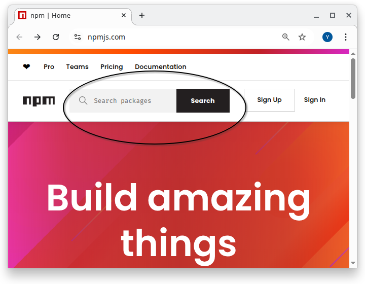

75 75. Step 2: Installing the Node.js packages with npm
As of Oct 22, 2026 · Official docs: npm install
There are many “packages” of JavaScript code that have been developed by organizations or individual developers which are then shared with the Node.js community. These packages let developers of new software get a running start and avoid needing to write generally useful code from scratch.
Node.js includes a tool named npm, which stands for “Node Package Manager”. This tool is used to install and manage these packages (as we’ll see below). Therefore technically these packages are known as npm packages (and not Node.js packages).
The npm packages are listed online at https://www.npmjs.com/, the npm registry. To see a package’s JavaScript code, search for the package, click its name, and then click the Code tab.

75.1 How to use a npm package in my Node.js project?
To use a package in your project, you must do both of the following:
List the name of the package in the
package.jsonfile.
This file should be in the top folder (i.e. “root folder”) for the project.
(See more about the exact format of thepackage.jsonfile below).Run the
npm installcommand in the terminal from the root folder for the project.
Thenpm installcommand downloads the packages that are used by this project into a folder named node_modules. (We’ll discuss this command more below).
75.2 More about the package.json file
Every project that uses Node.js and npm
should contain a file named
package.jsonin the top (i.e. root) folder for the projectmight also contain a file named
package-lock.json
For now, let’s focus on the package.json file (we’ll explain the package-lock.json file later). Click below to see the full package.json file for our task-app project. The file is in JSON format. We won’t give a full tutorial on JSON format here but it is relatively easy to see that the information in the file is structured and is laid out in sections. We’ll explain the different sections below.
75.2.1 package.json - the dependencies section
The following is the contents of the dependencies section for our task-app project. The dependencies section lists the npm packages that are needed to run the project. We’ll explain the exact format of the lines you see below.
{
"dependencies": {
"@radix-ui/react-checkbox": "^1.1.2",
"@radix-ui/react-dialog": "^1.1.2",
"@radix-ui/react-label": "^2.1.0",
"@radix-ui/react-popover": "^1.1.2",
"@radix-ui/react-select": "^2.1.2",
"@radix-ui/react-slot": "^1.1.0",
"@radix-ui/react-toast": "^1.2.2",
"@supabase/ssr": "^0.5.2",
"@supabase/supabase-js": "^2.47.10",
"class-variance-authority": "^0.7.1",
"clsx": "^2.1.1",
"date-fns": "^3.6.0",
"lucide-react": "^0.462.0",
"next": "14.2.35",
"react": "^18",
"react-day-picker": "^8.10.1",
"react-dom": "^18",
"react-dropzone": "^14.3.5",
"tailwind-merge": "^2.5.5",
"tailwindcss-animate": "^1.0.7"
}
}The following is the first line in the dependencies section:
"@radix-ui/react-checkbox": "^1.1.2",Let’s explain this piece by piece:
@radix-uiis the package’s scope: here, the name of the organization that developed the package. A scope (a name that starts with@) belongs to one npm user or organization, so only they can publish packages under it. Organizations that publish many packages often use a scope, so that their packages are easy to find and identify on the npm registry, https://www.npmjs.com/.react-checkboxis the name of the package^1.1.2refers to the version number of the package that should be used. (see more about package version numbers below)The
^before the version number has special meaning which is described below.
Some packages do not list an organization name. For example the following entry in our file is for a package named “class-variance-authority” but the entry in package.json doesn’t list an organization:
"class-variance-authority": "^0.7.1",A package without a scope can come from anyone, a single developer or a big company: next (by Vercel) and react (by Meta) have no scope either. Unscoped names are simply first come, first served.
75.2.2 dependencies vs. devDependencies
package.json has two lists of packages:
dependencies: packages the app needs while it runs, for examplenext,reactand@supabase/supabase-js. They end up in the finished app.devDependencies(“development dependencies”): tools you need only while building and testing the app, for exampletypescript,jest,eslint, and the Supabase command-line tool (supabase). They are not part of the app that visitors use.
npm install installs both lists into node_modules on your computer. A hosting service that only runs the finished app (or a command such as npm install --omit=dev) can leave the devDependencies out. The version rules below work the same way in both lists.
75.3 Run npm install to install the packages
To install these packages, run the following command from the top level folder (i.e. the “root” folder) in the project. This command creates a new folder named “node_modules” and downloads the code for each package into that folder.
npm installNote: You may see warnings when you run this command saying that some of the packages that you are trying to install have been deprecated. This is not a problem for us now. This usually happens because the packages listed in the package-lock.json files (which we discuss below) file are out of date. Keep reading …
75.4 npm package version numbers
Every time an npm package is updated by the developers of the package a new “version number” is created for that new version of the package. When someone uses a package to write their software, they should record the version number of the package that was used. This is important because sometimes later versions of the package might not work with the software that was written to use an older version of the package.
Package updates (and hence version numbers) fall into one of the following categories:
MAJOR updates: new features that are not necessarily totally compatible with existing software that used older versions of this package.
MINOR updates: new features that are intended to be backward-compatible with older versions
PATCH fixes: ie. bug fixes that are intended to be backward-compatible with older versions
The npm package version numbers reflect the type of changes that were made to the package since the last version. The version numbers have the form MAJOR_NUMBER.MINOR_NUMBER.PATCH_NUMBER
For example the version number 0.7.1 has
- MAJOR_NUMBER 0
- MINOR_NUMBER 7
- PATCH_NUMBER 1
When a new version of a package is released, the major, minor and patch numbers in the version number are updated accordingly.
75.5 using a “^” before a version number (e.g. “^1.1.2”)
It is common for version numbers to be listed with “special characters” that direct npm to install possibly later versions of the package than the specified version.
For example, a caret, i.e. ^, before a version number, e.g. ^1.1.2 , directs npm to install “this version or a later version that has the same MAJOR number”. This is often desired since versions of a package that have the same MAJOR version number should be compatible with each other.
For example the following line:
"@radix-ui/react-checkbox": "^1.1.2",indicates that this project requires version 1.1.2 or later of the package. However, this will only install the latest 1.X.X version. It will NOT install any version from 2.0.0 or later.
The logic for this is that the original developer of our project probably developed the code for the project using version 1.1.2 of the package. If in the future a new improved version 1.1.3 would be released to fix some bugs in the package then that version should be used instead of 1.1.2. The same would be true if even later versions of the package were released, such as 1.1.4 or 1.1.5 or even 1.2.0 - the latest of any 1.X.X version would be used.
However, if a new MAJOR version is released, e.g. 2.0.0 then that would NOT be used when doing npm install for this project. The reason is that a new MAJOR version is not guaranteed to work with code that was written for a prior MAJOR version number of the package.
75.6 package-lock.json records the exact version numbers that were used
As mentioned earlier, in theory, PATCH and MINOR updates to a package shouldn’t break code built and tested with an earlier version that shares the same MAJOR number. In practice, though, that’s not always true. To minimize potential issues, it’s best to install the project using the exact same package versions as those used by the original developer. Doing so ensures you’re working in the same environment and helps you avoid unexpected differences in behavior.
For this reason, when npm installs a package into the project, it records the EXACT version number that was installed into a file named package-lock.json. If the package-lock.json file exists then npm will install whatever version is registered in the package-lock.json file. However, if there is no package-lock.json file in a project then the rules stated above regarding which package is installed are followed. To be clear:
npm install will do the following:
If a
package-lock.jsonfile exists then the versions recorded in that file are downloaded to the node_modules folder.If there is no
package-lock.jsonfile in the project then the versions of the packages as indicated in the package.json file are downloaded to the node_modules folder. Note that these could be later versions than the actual numbers listed in the file. For example if the package.json file lists version ^1.7.3 then the latest version number that still has a 1 in the first position will be installed. (see above for more info about version numbers in the package.json file)
75.7 Deprecated warning messages when doing npm install
You may have noticed above that when you ran npm install, you got warning messages saying that one or more packages have been “deprecated”. In npm, a deprecation warning can refer either to an entire package or, more commonly, to a specific version of a package. In most cases, it means that the maintainers recommend upgrading to a newer version because the version being installed is outdated, has known issues, or has been superseded. This could happen if the package-lock.json file that was in the git repo has versions of packages that had later releases of new versions after the package-lock.json was created.
This generally should not be a problem for a learning tutorial, so keep the package-lock.json file as it is.
If you later turn the project into a real product, update the packages on purpose instead: npm outdated lists the packages that have newer versions, and npm update installs the newest versions that package.json allows and records them in package-lock.json. A package pinned to an exact version, such as "next": "14.2.35", is updated only when you change its version in package.json. Be aware that the original developer did not test the new versions, so the app might not work 100% as expected: test it again afterwards, and commit package.json and package-lock.json together.
75.8 Additional rules for package version numbers in package.json file
Above we discussed version numbers that start with a ‘^’. There are other types of “special characters” that affect which version of a package is actually installed. Below are the common forms with brief examples.
The following is a quick reference table. These are explained in more detail below.
| Form | Example | Meaning |
|---|---|---|
| Exact | 1.2.3 |
Only that version |
| Caret | ^1.2.3 |
Non-breaking updates (same major) |
| Tilde | ~1.2.3 |
Patch updates (same minor) |
| X-range | 1.2.x, * |
Wildcards |
| Hyphen | 1.2.3 - 1.4.0 |
Inclusive range |
| Comparators | >=1.2.3 <2 |
Combine with a space (AND) or || (OR) |
| Pre-release | ^2.0.0-rc.1 |
Also allows later pre-releases of 2.0.0 |
| Tag | "latest", "next" |
Registry dist-tag |
| Alias | npm:pkg@^1 |
Install another package under this name |
| Local file | file:../dir |
From local disk |
| Tarball URL | https://…/pkg.tgz |
Install from remote tarball |
| Git | github:user/repo#tag |
From a Git repository (branch/tag/commit) |
75.8.1 1) Exact version number (no extra special characters)
1.2.3
{ "dependencies": { "lodash": "1.2.3" } }75.8.2 2) Caret range (^) — allow non-breaking updates (same major) - discussed above
The idea of the ^ is to only allow newer versions that will not break existing code. In general this means it allows for newer versions that have the same major number. For example:
^1.2.3→>=1.2.3 <2.0.0
However, if the major version is 0 (e.g. 0.2.3) the caret works a little differently. A major version 0 is intended to signal that the package is still experimental or under active development. Because the package is not considered stable, even small changes—like a minor or patch update—may break existing code.
For this reason, npm’s version range rules become more restrictive for major-zero versions: the ^ will only allow updates that keep the left-most non-zero digit the same. This prevents accidentally upgrading to a version that might introduce breaking changes. For example:
^0.2.3→>=0.2.3 <0.3.0(major=0 is special)
{ "dependencies": { "lodash": "^4.17.21" } }75.8.3 3) Tilde range (~) — allow patch updates (same minor)
~1.2.3→>=1.2.3 <1.3.0
{ "dependencies": { "lodash": "~4.17.0" } }75.8.4 4) X-range / wildcard
1.2.x,1.x,*
{ "dependencies": { "lodash": "1.2.x" } }75.8.5 5) Hyphen range
1.2.3 - 1.4.0→>=1.2.3 <=1.4.0
{ "dependencies": { "lodash": "4.17.0 - 4.17.21" } }75.8.6 6) Comparator sets
Use
>,>=,<,<=and combine with spaces (AND) or||(OR):>=1.2.3 <2.0.0^1.2 || ^2.0
{ "dependencies": { "lodash": ">=4.17.0 <5" } }75.8.7 7) Pre-releases
- Append identifiers like
-alpha.1,-beta, etc. A pre-release is a test version published before the final one:2.0.0-beta.1comes before2.0.0. - A range only matches pre-releases if the range itself names a pre-release of the same
MAJOR.MINOR.PATCH. For example,^2.0.0-beta.1allows2.0.0-beta.2, the final2.0.0and every later2.x.xversion (such as2.3.0), but not2.1.0-beta.1and not3.0.0.
{ "dependencies": { "react": "^19.0.0-rc.0" } }75.8.9 9) Aliases (npm:)
- Install one package as another name.
{ "dependencies": { "lodash": "npm:lodash-es@^4.17.21" } }75.8.10 10) Local paths
file:to a directory or tarball on disk.
{ "dependencies": { "my-lib": "file:../my-lib" } }workspace: and link: are not npm
Other tutorials sometimes show versions like "workspace:*" or "link:../tooling". Those are features of other package managers, pnpm and Yarn. npm stops with the error Unsupported URL Type "workspace:" (or "link:"). (npm has workspaces too, but there you write an ordinary version, such as "*".)
75.8.11 11) Tarball URLs
- Remote
.tgzURL.
{ "dependencies": { "mypkg": "https://example.com/mypkg-1.2.3.tgz" } }75.8.12 12) Git references
- Full or shorthand; may include
#branch,#tag, or#commit.
{
"dependencies": {
"lib-ssh": "git+ssh://git@github.com/user/repo.git#main",
"lib-https": "git+https://github.com/user/repo.git#v1.2.3",
"gh-short": "github:user/repo#abc1234",
"gl-short": "gitlab:user/repo#v1.0.0",
"bb-short": "bitbucket:user/repo#develop"
}
}75.9 Alternatives to npm
npm is the tool used to install and manage these packages. However there are other competing “package manager” tools for “npm packages”. Currently available package manager tools are listed below. There are pros/cons to using each one:
- npm – default with Node.js; biggest ecosystem. Slower than others.
- Yarn – fast installs; good caching. Old v1 now legacy.
- Yarn Berry – no
node_modules; great for managing many packages together. Complex setup. - pnpm – space-efficient; strict resolution. Some tools misbehave.
- Bun – ultra-fast; includes runtime. New and less stable.
If you’re just starting out, I recommend using npm (it’s most popular). However, don’t be surprised if some other tutorials that you see mention other package managers. All package managers for Javascript have similar capabilities and features.
75.10 Alternatives to Node.js
Similarly there are Javascript “runtime” environments other than Node.js. Again - if you’re just starting out, I recommend that you use Node.js but be aware that the others exist.
- Deno – modern and secure; runs JavaScript and TypeScript easily. Not all Node tools work yet.
- Bun – very fast and all-in-one (includes tools for testing and building). Still quite new.
- Cloudflare Workers – runs small apps close to users for speed. Can’t use all Node features.
- Workerd – the open-source engine behind Cloudflare’s system. Mainly for advanced use.
Practice Questions
Easy
Question 1 · Short answer
What two things must you do to use an npm package in your project?
Question 2 · Multiple choice
Where does npm install put the code of the packages it downloads?
- In
package.json - In a folder named
node_modules - In
package-lock.json - On npmjs.com
Question 3 · Matching
Match each part of the line "@radix-ui/react-checkbox": "^1.1.2" with its meaning.
| Part | Meaning | |
|---|---|---|
1. @radix-ui |
A. the version number | |
2. react-checkbox |
B. “this version or a later one with the same MAJOR number” | |
3. 1.1.2 |
C. the scope: the organization that developed the package | |
4. ^ |
D. the name of the package |
Question 4 · Matching
Match each kind of package update with its description.
| Update | Description | |
|---|---|---|
| 1. MAJOR | A. bug fixes, intended to be backward-compatible | |
| 2. MINOR | B. new features that are not necessarily compatible with software written for older versions | |
| 3. PATCH | C. new features, intended to be backward-compatible |
Question 5 · True or false
You should run npm install from the project’s root (top) folder, where package.json is.
Question 6 · Short answer
Which file records the exact version of every package that npm install installed?
Medium
Question 7 · Short answer
For the version number 2.13.4, what are the MAJOR, MINOR and PATCH numbers? If the next release is 3.0.0, what kind of update is that, and what does it warn you about?
Question 8 · Multiple choice
Imagine a package named example-lib with these versions published: 1.0.9, 1.1.2, 1.4.0 and 2.0.0. Your package.json says "example-lib": "^1.1.2", and there is no package-lock.json. Which version does npm install install?
1.0.91.1.21.4.02.0.0
Question 9 · Predict
Same package and versions as in the previous question, but now the project does have a package-lock.json, and it records example-lib version 1.1.2. Which version does npm install install, and why?
Question 10 · Write the range
Write the range of versions that each entry allows:
~1.2.3^1.2.31.2.3
Question 11 · Short answer
Look at the dependencies section of the project’s package.json. Which package is pinned to one exact version, and how can you tell?
Question 12 · Classify
According to the page, which of these tools are package managers, which are JavaScript runtimes, and which one is both? npm, Yarn, pnpm, Node.js, Deno, Bun.
Question 13 · Scenario
You run npm install and see several warnings saying that some packages are deprecated. What does that mean, and do you need to stop the tutorial?
Hard
Question 14 · Short answer
The project lists "class-variance-authority": "^0.7.1". Which versions does the ^ allow here? Why is the rule different when the MAJOR number is 0?
Question 15 · Long answer
package.json already says which versions are allowed. Why does a project also need package-lock.json?
Question 16 · Scenario
Maria’s copy of the task app works. Sam deleted package-lock.json “to clean up” and ran npm install again; now one feature behaves differently on his computer. What is the likely cause, and how can he fix it?
Question 17 · Scenario
Sam opens a new terminal, which starts in his home folder, and runs npm install right away. He gets an error that mentions package.json. What went wrong, and how does he fix it?